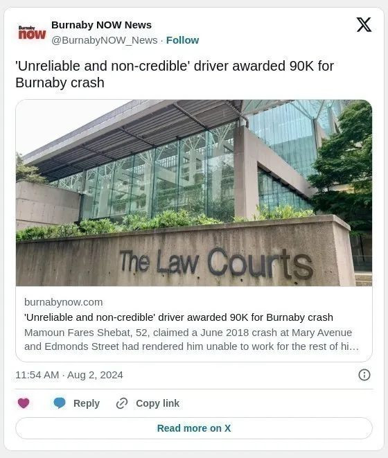

大温一名 52 岁男子声称六年前在本拿比发生车祸，导致他余生无法工作，一名法官称他为“不可靠且不可信的证人”，不过仍判给他获得9 万元的赔偿金。
据BC省最高法院上周作出裁决，谢巴特（Mamoun Fares Shebat ）起诉华裔司机A某，称其在 2018 年 6 月在玛丽大道和埃德蒙兹街交叉口发生车祸，导致他身体和心理遭受伤害。
埃利奥特·迈尔斯法官指，谢巴特、A某和第三位出庭作证的独立证人对事故以及随后发生的事情给出了“完全不同的版本”的说法。
迈尔斯最终裁定双方“未能履行应有的谨慎”，并将 75% 的责任归咎于谢巴特，华裔司机A某承担25%的责任 。

根据burnabynow的报道，司机A某承认，谢巴特在事故中遭受了颈部扭伤型软组织损伤，但谢巴特表示，这一事件使他终生无法工作。
根据裁决，谢巴特将此次事故归咎于持续的心理健康问题，包括创伤后应激障碍、抑郁和焦虑，以及睡眠不佳、慢性头痛、颈部、肩膀和背部疼痛、恶心、混乱和笨拙。
谢巴特在法庭称“他的生活和能力非常黯淡的景象”。
裁决称：“他说他大部分时间都呆在家里；他不能离开家，需要服用药物，当他抑郁时，他会一个人在黑暗的房间里度过四到六个小时。他说这种情况‘每天都会发生’。”
但事故发生后的视频监控和谢巴特自己的社交媒体帖子却讲述了不同的故事。
根据裁决，社交媒体帖子显示，他独自一人以及和家人一起前往沙特阿拉伯、约旦、瑞士和维多利亚，并在他必须步行或徒步才能到达的地方摆姿势拍照。
而且，尽管他告诉医生，自 2018 年事故发生以来，他已经无法做饭、打扫卫生、银行、开车甚至走路，但视频监控拍到他慢跑穿过街道、在黑暗和雪地里开车、并接孙子们放学。
法官指谢巴特的证词存在多个矛盾之处，包括他对车祸后发生的情况的描述。
他说他失去了知觉，醒来时躺在地上，周围都是消防员，其中一名消防员清理了他鼻子上的血迹。
但肇事司机A某和独立证人表示，现场从未有消防员，一名副消防队长作证表示，没有记录表明该部门曾派往现场。
法官表示，谢巴特关于可能导致其症状的其他因素的证词也被发现不可靠。
司机A某的律师辩称，谢巴特的心理健康和耳朵问题可能是他在叙利亚军队服役期间或在他和家人逃离该国之前的叙利亚内战期间造成的。
谢巴特作证说，他在军队期间从未开过枪，也没有在战争期间经历过爆炸或其他暴力事件，但他在 2017 年告诉burnabynow，他曾住在战争归零地德拉，并且每天晚上都会有炸弹爆炸，他的房子里都能听到炸弹的声音。
迈尔斯法官表示，谢巴特关于他从未在军队开枪的说法令人难以置信。
法官进一步指出，在法官中午休庭期间，当谢巴特正在接受有关他的社交媒体帖子的盘问时，他删除了几张与他关于自己残疾的说法相矛盾的自拍照。
根据裁决，谢巴特还获得了他没有资格获得的政府新冠福利。
法官迈尔斯说：“我发现谢巴特既不可信也不可靠”。
最终，迈尔斯法官驳回了谢巴特关于他遭受终身伤害的说法，但判给他6万元的疼痛赔偿金、25,495元的半年收入损失赔偿金和4,163元的特别损害赔偿金。